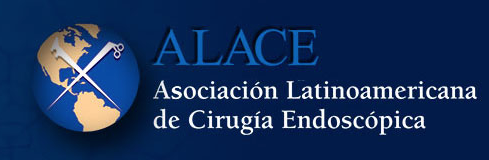

Dirección
Pasaje Los Pinos 114 Consultorio 503.
Frente a Ripley Miraflores.
lahoud@cirugiaobesidadperu.com
(+51) 999 266 281
- Médico Cirujano del servicio de cirugía general y digestiva del hospital Sergio Bernales y encargado del capítulo de cirugía bariatrica y metabolica.
- Médico Cirujano general y digestivo clínica San borja - SANNA
- Médico Cirujano general y digestivo clínica LA LUZ
- Médico Cirujano general y digestivo clínica Providencia- San Miguel
- Médico Residente en la Especialidad de Cirugía General; Hospital Nacional Edgardo Rebagliati Martins ESSALUD
- Profesor Contratado del curso de Cirugía I Universidad Científica del Sur.
- Profesor Contratado del curso de Cirugía I Universidad SAN MARTIN
- Internado Médico Rotatorio Hospital Nacional Edgardo Rebagliati Martins ESSALUD
- Miembro de la Asociación Peruana de Cirugía Bariátrica
- Miembro de la IFSO, International Federation for the Surgery of Obesity
- Miembro de ALACE ASOCIACION LATINOAMERICANA DE CIRUJANOS ENDOSCOPICOS
- Miembro de la Sociedad Peruana de Cirugía Endoscópica
- Maestría en Medicina con Mención en Cirugía USMP. Diciembre 2007.GRADO DE MAESTRO EN MEDICINA CON MENCION EN CIRUGIA.
- Ministerio de ciencia y salud de ESPAÑA, Homologación de titulo de Medico-Cirujano. Año 2006
- Post Grado - Entrenamiento de Cirugía Bariátrica en el servicio de Cirugía Bariátrica y Metabólica. Hospital Almater. México - Baja California.
- Reunión de Cirugía Bariátrica y Metabólica. Puebla - México.
- "Avances notables en Cirugía" Hospital General Calixto García. La Habana. Cuba. 720 horas. Calificación Excelente
- Rotación Externa en Cirugía Laparoscópica en el servicio de Cirugía General y Digestiva del Hospital de la Santa Creu y Sant Pau de la Universidad de Barcelona - Espana Calificación Excelente
- VI Curso de Formación en Cirugía Endoscópica para residentes y especialistas de Cirugía general y aparato digestivo. Hospital general de Castello.Universidad de Valencia - España. 34 Horas
- Asistente al Congreso Latinoamericano de Cirugia Bariátrica y Metabólica IFSO. Cartagena Colombia Marzo 2011
- American Institute of TeleSurgery. Certificate of Training in minimal Access surgery. IRCAD Marzo 2012
- Programa Avanzado de Apoyo Vital en Trauma Para Médicos. ATLS 48 horas
- Reunión de Cirugía Bariátrica y Metabólica. Puebla - México.
- Ponente en el tema, Colecistectomía Laparoscópica nuestra experiencia en el Hospital María Auxiliadora en el ultimo año, Congreso Internacional de Cirugía General SCGP.
- Ponente en el tema "Procesos Quirúrgicos en la Cavidad Oral" Seminario Taller "Modelo de la Investigación Odontológica" Universidad Nacional Mayor de San Marcos.
- Ponente en el tema "Lesiones Neoplásicas de la Cavidad Oral" Congreso de Medicina Oral. Universidad Nacional Mayor de San Marcos.
- Ponente en el tema "Diabetes y su Repercusión en la Cavidad Oral" Seminario Taller "Modelo de la Investigación Odontológica" Universidad Nacional Mayor de San Marcos.
- Ponente en el tema "Manejo de Antibiótico en los procesos Infecciosos agudos de la Cavidad Oral" Congreso de Medicina Oral. Universidad Nacional Mayor de San Marcos.
- Ponente en el seminario taller "Estructura de un modelo de investigación estomatológica"
- Ponente en el tema "Factores que condicionan aparición de hiperreactividad bronquial en niños menores de 5 años en P.S Rinconada. I Congreso Internacional de Facultades de Medicina Humana. Universidad Ricardo Palma.
- Ponente en el tema. "Incidencia de Colédoco litiasis en el Hospital Loayza. Marzo 1999 al 2000" XXXIII Congreso Peruano e Internacional de Cirugía.
Asociaciones nacionales e internacionales
Dr. Antonio Lahoud Velaochaga es miembro asociado de las principales sociedades médicas nacionales e internacionales.

Publicaciones científicas
Publicaciones en revistas científicas, o presentados en congresos y eventos.
COLECISTECTOMIA LAPAROSCOPICA, NUESTRA EXPERIENCIA EN EL HOSPITAL MARIA AUXILIADORA EN EL ULTIMO AÑO.
XI Congreso Internacional de Cirugía General.
Autor"LAPAROSCOPIC RESECTION OF SUSPECTED GASTRIC STROMAL TUMORS" - European Association for Endoscopic Surgery" (E.A.E.S).
14th INTERNACIONAL EAES CONGRESS HELD IN BERLIN.
Coautor"ATRESIA DE VÍA BILLAR" - Comunicación de un caso.
VIII Congreso Internacional de Cirugía general.
IV jornada Peruana Chilena de Cirugía general.
AutorCARACTERÍSTICAS CLÍNICAS Y EPIDEMIOLÓGICAS DE LEISHMANIASIS CUTÁNEA SELVÁTIVA EN EL HOSPITAL DE APOYO DE VILLA RICA.
I Congreso Internacional de Facultades de Medicina Humana - Universidad Ricardo Palma
Autor"TUMOR FILOIDES : Comunicación de un caso clínico y revisión de la literatura"
I Congreso Internacional de Facultades de Medicina Humana - Universidad Ricardo Palma.
Publicada en la revista Odontológica San Marquina. Vol. Nro 10 Página 29-31.
AutorFRACTURA DE COLLES EN PACIENTES QUE ACUDEN AL SERVICIO DE EMERGENCIA DEL HOSPITAL REBAGLIATI. Nov-Dic 2000.
XXXIII Congreso Peruano e Internacional de Cirugía.
AutorCÁNCER DE PENE
XXXIII Congreso Peruano e Internacional de Cirugía.
AutorINFECCIÓN DEL TRACTO URINARIO RECURRENTE EN PEDIATRÍA
Publicado en la Revista Odontología Sanmarquina. Vol.1. Nro 8
AutorINCIDENCIA DE COLÉDOCO LITIASIS DURANTE UN AÑO EN EL HOSPITAL LOAYZA
XXXIII Congreso Peruano e Internacional de Cirugía.
CoautorTRAUMATISMO ABDOMINAL EN EL HOSPITAL DE APOYO MARÍA AUXILIADORA
XXXIII Congreso Peruano e Internacional de Cirugía.
CoautorTRAUMATISMO ABDOMINAL CERRADO: Reporte de un Caso
XXXIII Congreso Peruano e Internacional de Cirugía.
CoautorCONSIDERACIONES EPIDEMIOLÓGICAS DE APENDICITIS AGUDA EN EL HOSPITAL LOAYZA
XXXIII Congreso Peruano e Internacional de Cirugía.
CoautorESTUDIO NUTRICIONAL DE ESCOLARES EN LA REGIÓN DE LOBITOS - Piura
I Congreso de Confraternidad de Medicina Internacional. III Congreso Regional de Medicina. Chimbote.
CoautorESTUDIO DE UN BROTE DE BRUCELLA DENTRO DEL HOSPITAL SAN JUAN DE MATUCANA
I Congreso de Confraternidad de Medicina Internacional
III Congreso Regional de Medicina. Chimbote.
Coautor-
Dirección
Pasaje Los Pinos 114 Consultorio 503. Frente a Ripley Miraflores.
-
Teléfono
(+51) 999266281
-
Correo
lahoud@cirugiaobesidadperu.com
-
Website
www.clinicadecirugiadigestiva.com